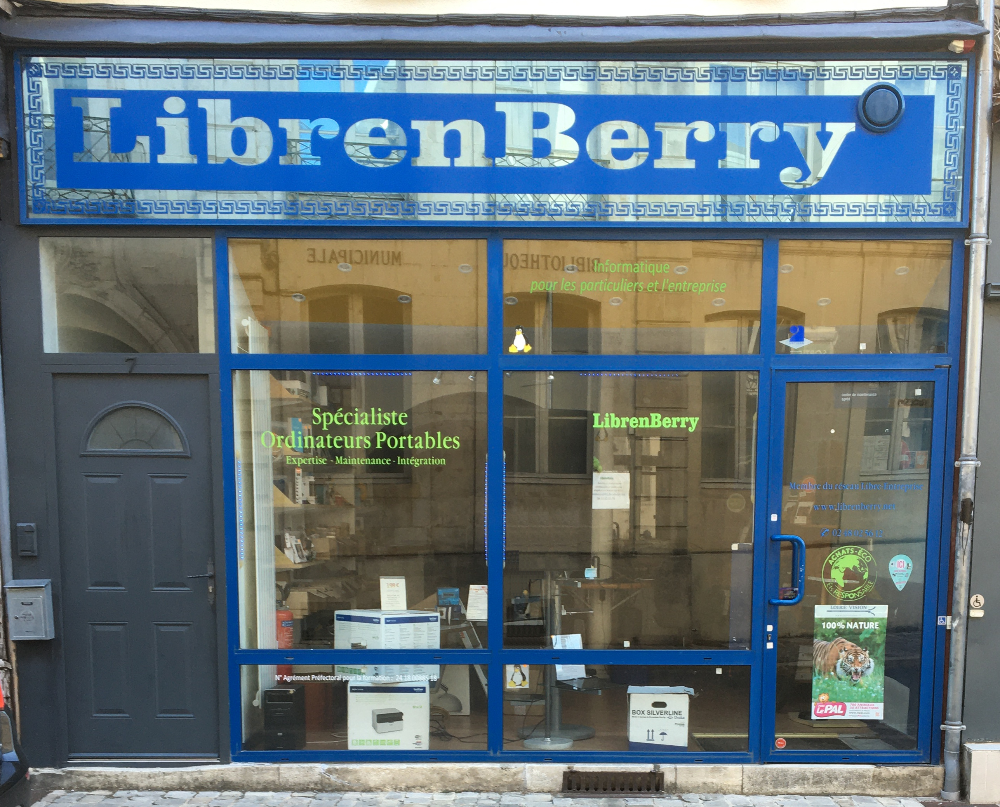
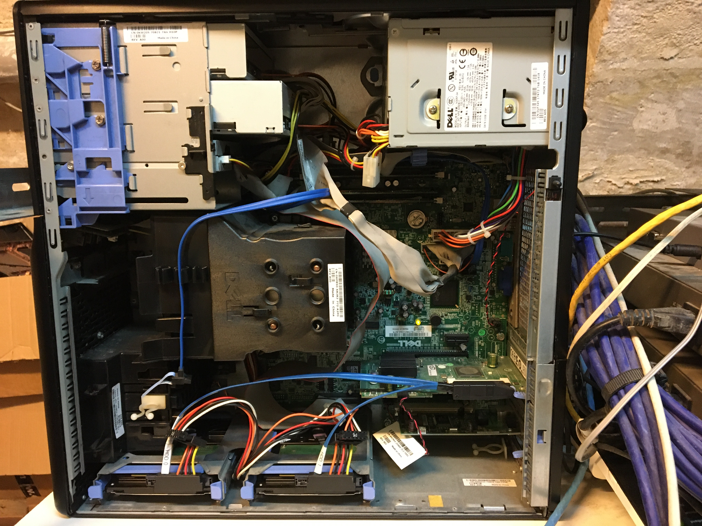
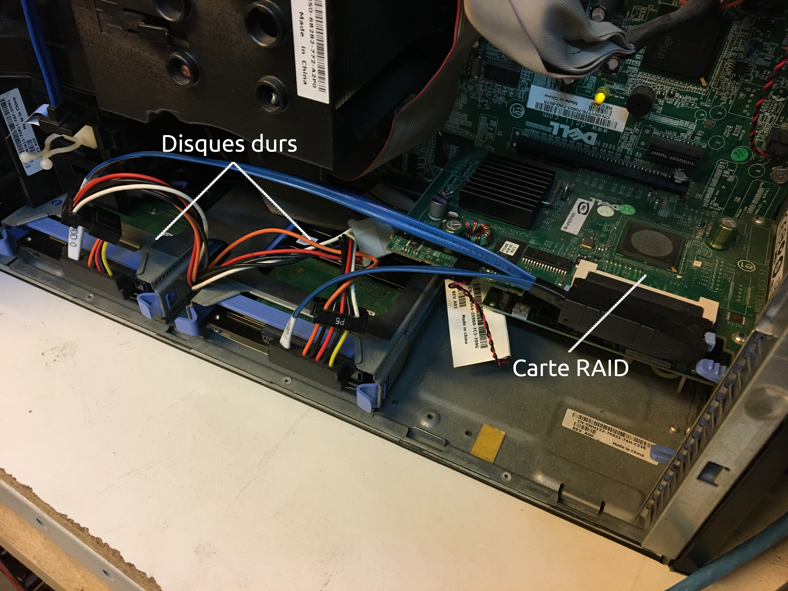
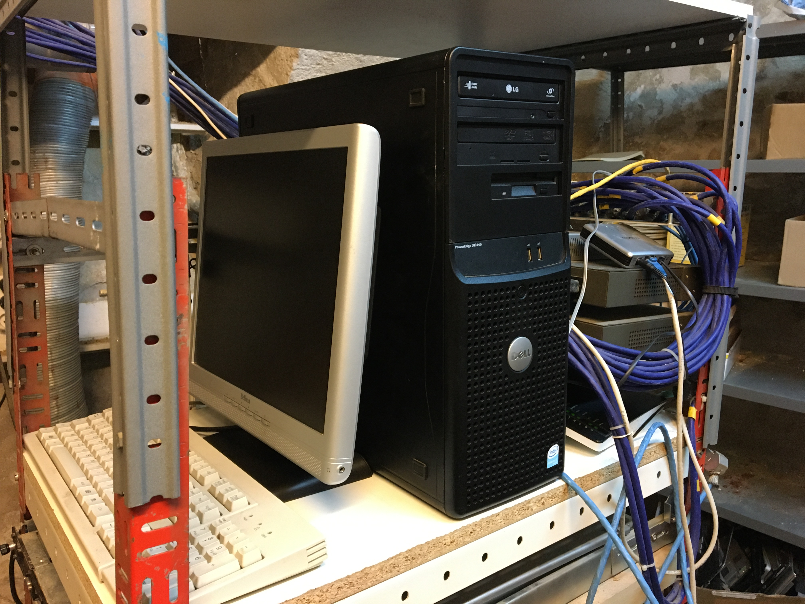
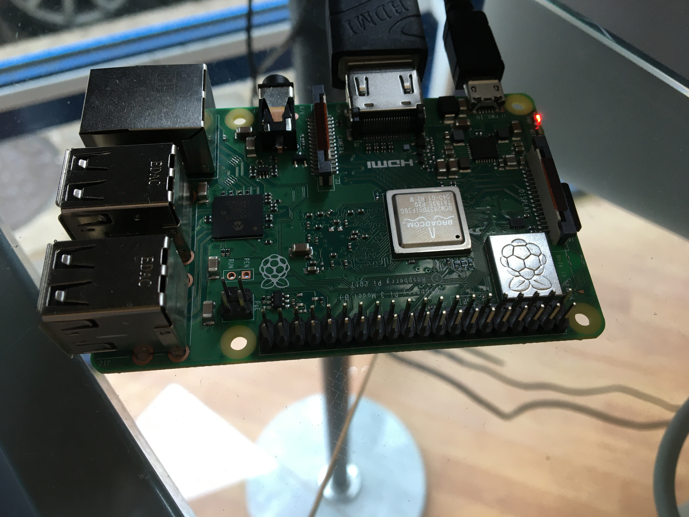
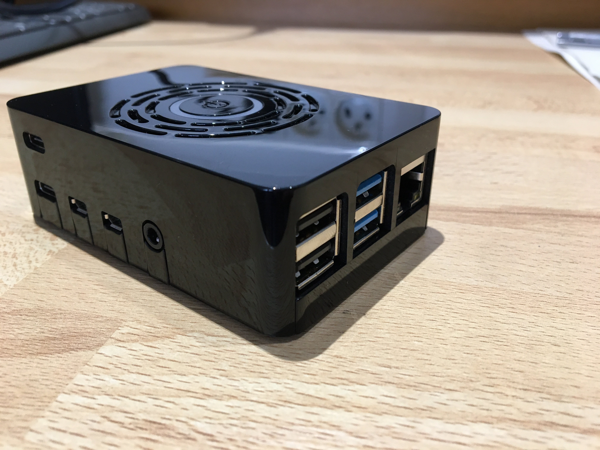
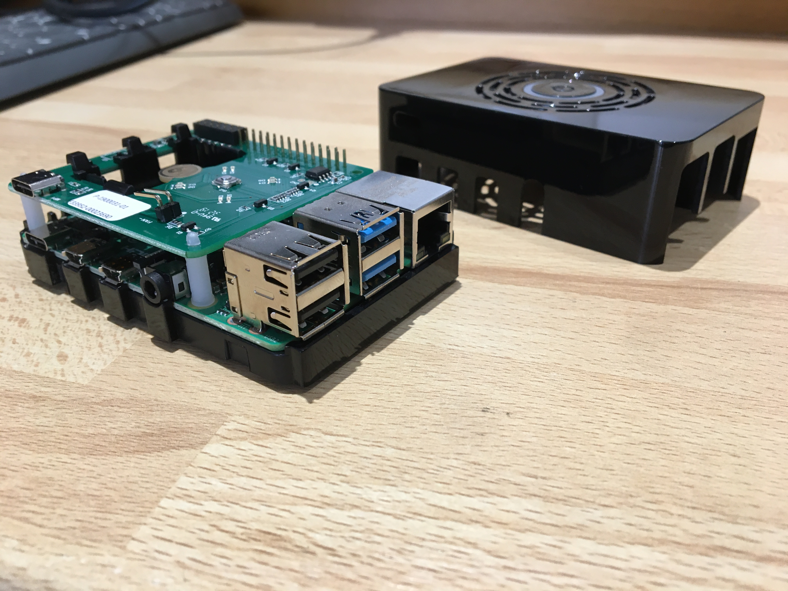

Lors de mon BTS, j'ai eu l'occasion d'effectuer un stage et une alternance dans l'entreprise Librenberry, situé à Bourges.
Cette entreprise propose diverses prestations de services, comme un contrat de support technique pour les entreprises, une mise en place de solutions logiciels pour les associations, la vente de fournitures informatiques, le nettoyage physique et logiciel d'ordinateurs ainsi que leur dépannage, mise à niveau, maintenance, et installation de systèmes d'exploitation. Elle promut également les logiciels libre.

Stage en entreprise
Au cours de mon stage de première année, j'ai effectué l'installation et le déploiement d'un serveur web en RAID (réplication des disques durs).
Le RAID est une technologie qui permet de copier à l'identique un disque sur un autre, ce qui permet de sécuriser les données dans le cas d'une défaillance de l'un disque.
J'ai tout d'abord effectué la création du RAID grâce à la carte RAID présente dans le serveur, j'ai pour cela indiqué, via l'interface accessible au démarrage, les deux disques que je souhaitais utiliser.
Puis j'ai installé et configurer Debian 10, avec une adresse ip statique. J'ai également sécurisé la connexion ssh en modifiant le port, puis en interdisant la connexion par mot de passe, pour privilégier une connexion par clé publique et privée. Ainsi, seul les ordinateurs dont leur clé publique se trouve dans un fichier sur le serveur, ont accès à celui-ci. J'ai aussi configuré le pare-feu de façon à n'autoriser que les ports (communications) indispensables.
J'ai ensuite installé le serveur web qui est chargé d'afficher le site web, nous avons utilisé le serveur Nginx, et je l'ai configurer pour notre site. Puis j'ai installé le système de gestion de bases de données MariaDB, ainsi que phpMyAdmin qui est une interface graphique permettant également de gérer les bases de données.
Pour finir, j'ai mis en place le protocole https afin de sécuriser le site web.



Interieur du serveurCarte RAID et disques dursServeur installé
Pendant mon stage, j'ai aussi effectué la mise en place d'un raspberry pi, afin de diffuser une vidéo publicitaire pour notre boutique.
L'installation de celui-ci est similaire à celle du serveur, j'ai d'abord installé le système d'exploitation Raspbian avec, lui aussi, une adresse ip statique, ainsi que la sécurisation de la connexion ssh avec la modification du port, et une connexion par clé publique et privée, et enfin la configuration du pare-feu.
J'ai aussi assembler un raspberry pi pour les clients, afin d'en faire un mini ordinateurs pour des consultation internet.
J'ai également été amené à effectuer les diverses prestations que la boutique propose.



Raspberry de la boutiqueRaspberry pour les clientsRaspberry pour les clients ouvert
Alternance
Durant mon apprentissage, j'ai réalisé, en collaboration avec le gérant, le site internet de l'entreprise, en utilisant la webapp Scenari ainsi que la suite bureautique OptimOffice. Vous pouvez le retrouver à l'adresse www.librenberry.net.
J'ai également effectué des diagnostics et des réparations d'ordinateurs de clients professionnel et particulier, ainsi que des installations de systèmes d'exploitation, principalement Linux et Windows 10, de la vente de fournitures informatiques, l'assemblage d'ordinateurs, et la configuration de nas Qnap.
J'ai aussi pu participer à plusieurs interventions techniques chez des professionnels.